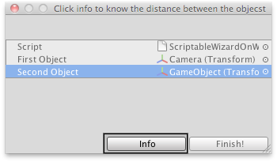

ScriptableWizard.OnWizardOtherButton()
Description 描述
Allows you to provide an action when the user clicks on the other button.
This is the place where you can implement all the stuff that will
be done if the user clicks the secondary option when calling DisplayWizard.
See Also: ScriptableWizard.DisplayWizard

ScriptableWizard with an "Other" button, in this case named "Info".
// Display a window showing the distance between two objects when clicking the Info button.
using UnityEngine; using UnityEditor;
public class ScriptableWizardOnWizardOtherButton : ScriptableWizard { public Transform firstObject = null; public Transform secondObject = null;
[MenuItem("Example/Show OnWizardOtherButton Usage")] static void CreateWindow() { ScriptableWizard.DisplayWizard("Click info to know the distance between the objects", typeof(ScriptableWizardOnWizardOtherButton), "Finish!", "Info"); }
void OnWizardUpdate() { if (firstObject == null || firstObject == null) { isValid = false; errorString = "Select the objects you want to measure"; } else { isValid = true; errorString = ""; } }
// Called when you press the "Info" button. void OnWizardOtherButton() { float distanceObjs = Vector3.Distance(firstObject.position, secondObject.position); EditorUtility.DisplayDialog( "The distance between the objects is: " + distanceObjs + " Units", "", "Ok"); }
// Called when you press the "Finish!" button. void OnWizardCreate() { } }